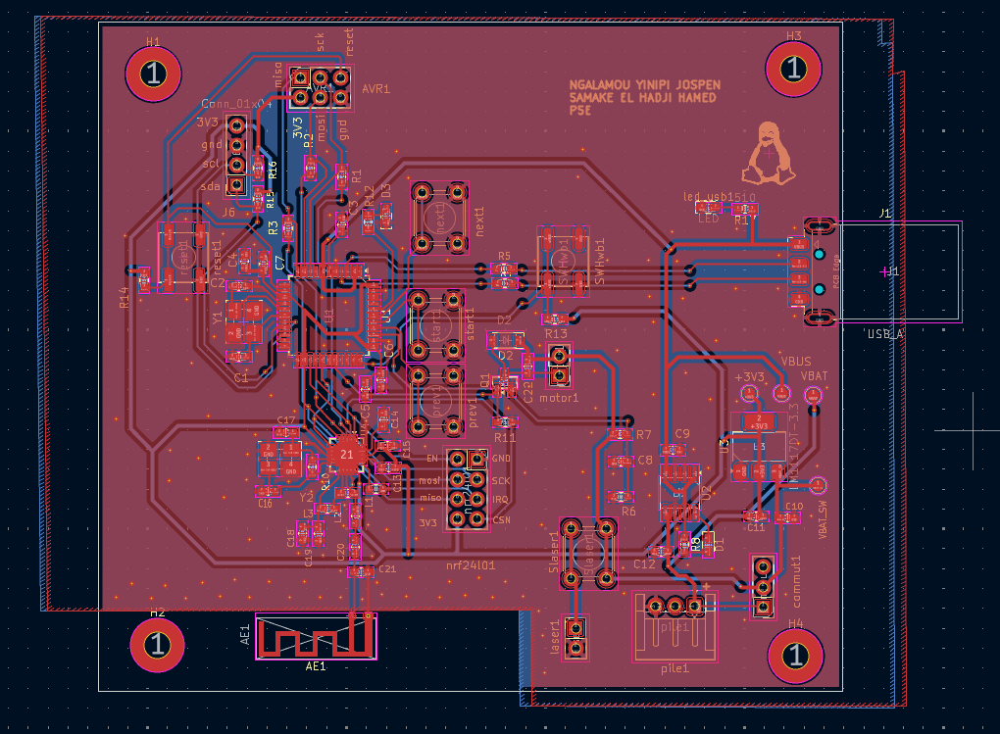
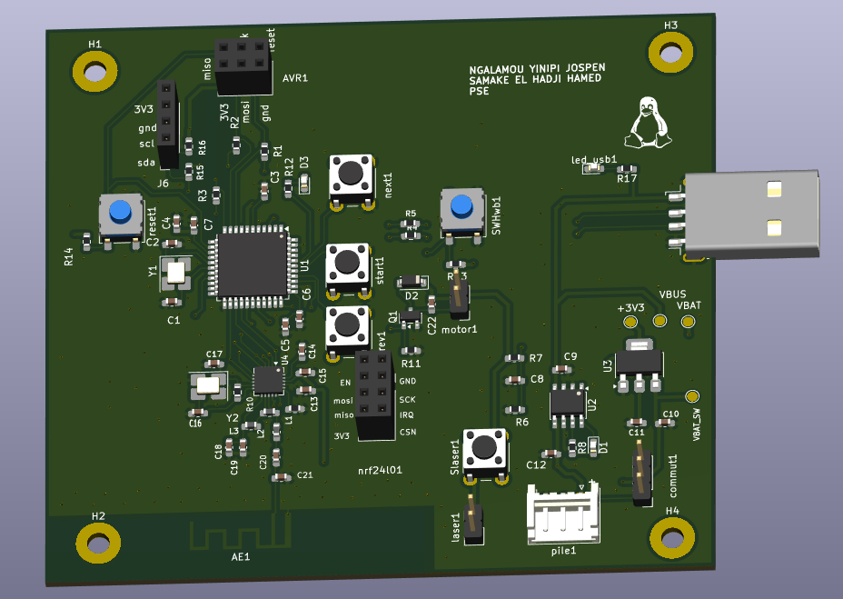
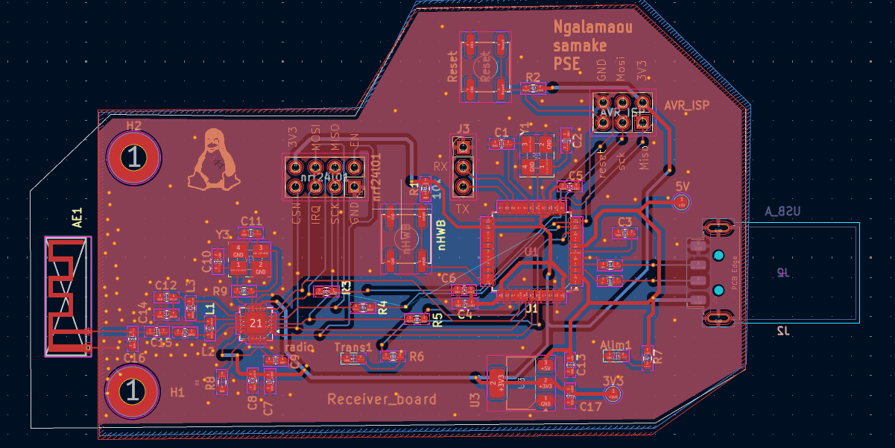
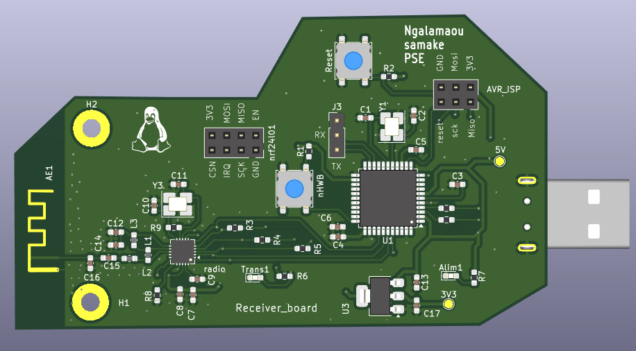
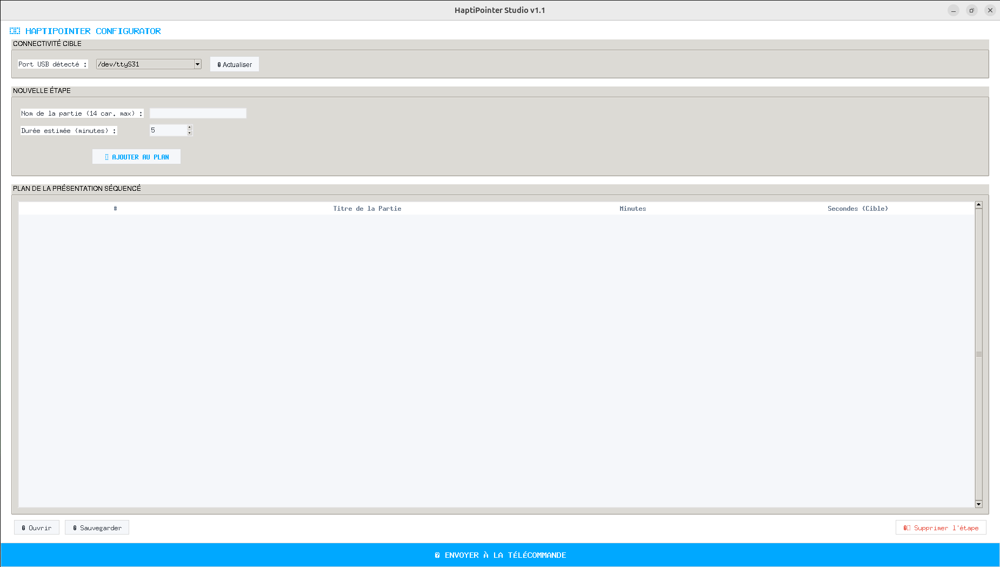

Une solution complète associant deux cartes matérielles dédiées (émetteur et récepteur USB) et une application de bureau pour configurer les séquences temporelles de présentation directement en mémoire EEPROM.
À chaque jalon programmé dans l'EEPROM, la télécommande vibre en silence : l'orateur sait où il en est sans regarder l'horloge.
Permettre aux orateurs de maîtriser le timing de leurs présentations grâce à des alertes haptiques silencieuses et programmables, sans nécessiter de recompilation de firmware à chaque changement d'horaire.
Conception sous KiCad de la télécommande autonome : microcontrôleur, gestion d'alimentation batterie, moteur vibrant haptique, antenne RF méandre et boutons de contrôle de présentation.


Conception sous KiCad du dongle récepteur assurant la liaison radio 2,4 GHz et l'émulation du port série virtuel pour la programmation et l'interaction avec le PC.


Application de bureau développée en Python permettant d'éditer la table des jalons de la présentation et de programmer directement l'EEPROM de l'ATmega32U4 via liaison série USB CDC.

Validation du retour haptique et du séquencement.
Validation de la liaison radio et de l'acquittement.
KERNEL PANIC — Hard Fault Exception
------------------------------------------
R0 = 0x00000000 R1 = 0x2000A3F0
R2 = 0x00000001 R3 = 0x08003A10
R12 = 0xDEADBEEF LR = 0x08002F1C
PC = 0x08003A4C xPSR= 0x21000000
CFSR = 0x00008200 HFSR = 0x40000000
>>> Stack overflow detected in task 'main_loop'
>>> System halted.